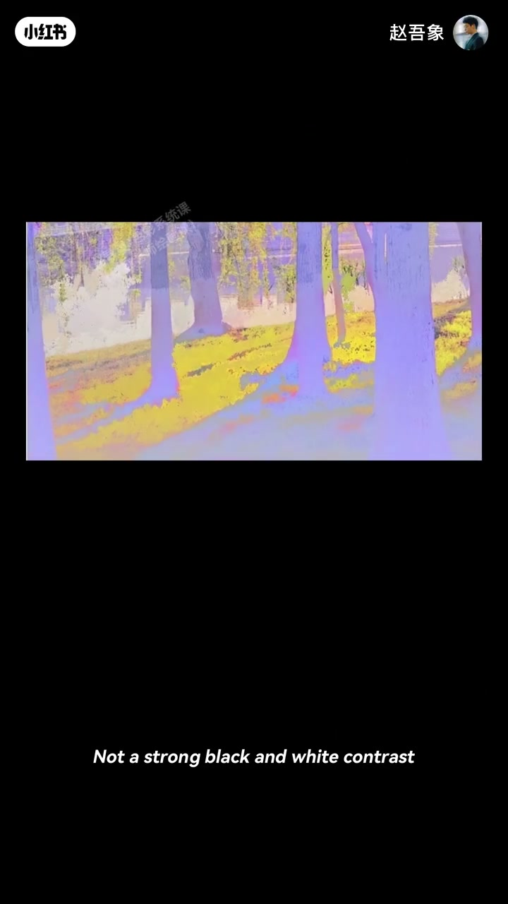
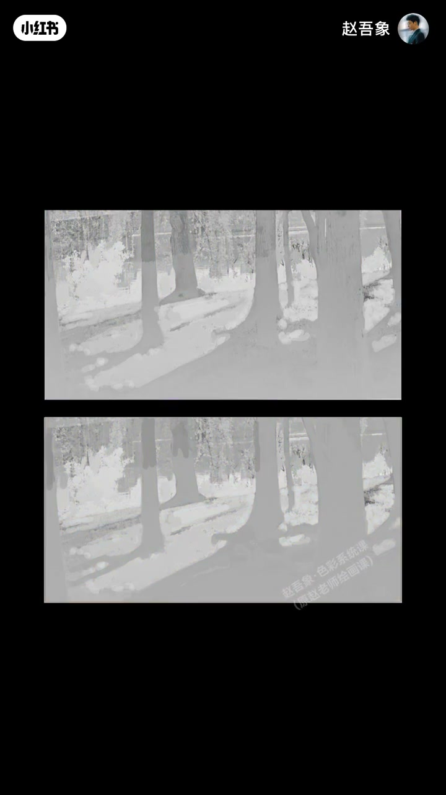
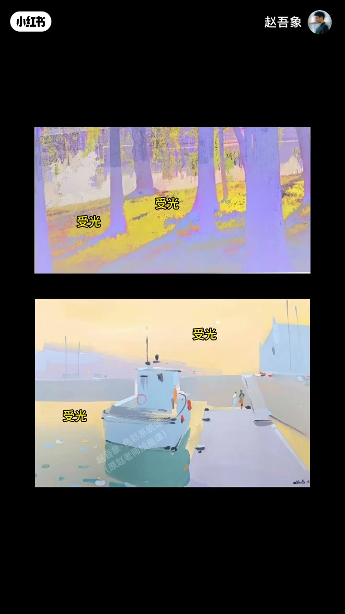
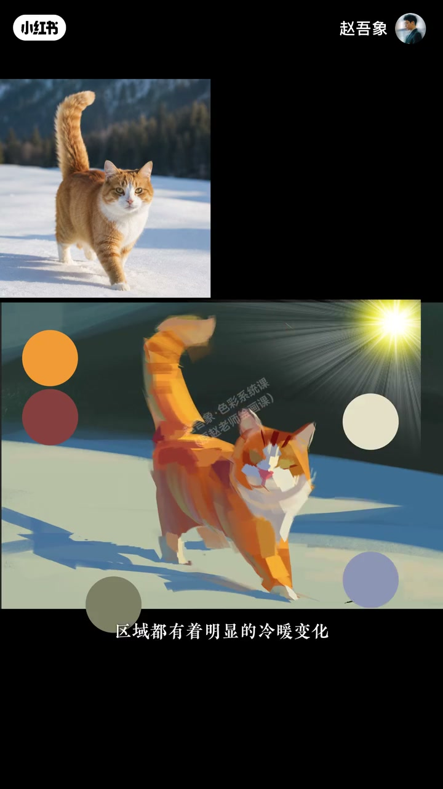

内容要点
上期讲集中明度对比可造超强光感；这幅却无明显黑白仍光感强。实验：草地变冷、树影变暖后光感全弱，灰度显示明度没变——只消掉了草地暖黄与树影冷紫的冷暖对比。除了明度，受光与背光的冷暖对比是制造光感的秘诀。色块起稿：亮部受暖光发黄，背光受天光发紫，底面可因地面反光泛绿。下期讲纯度。
知识结构
消冷暖则光感塌；明度未变；冷暖是秘诀。
色块起稿；受暖背冷；底面反光泛绿。
光感双通道：明度对比之外，务必保住受光暖、背光冷（及反光）的温度差，黑白弱也能光感强。
00:00-00:54实验：只改冷暖，光感塌掉
接上期：集中明度对比可造超强光感；可这幅没有很强黑白对比，为何光感仍强？实验先把黄草地变冷，再把紫树影变暖——光感完全弱掉。到底改了什么？以为是明度，灰度一看居然没变。
其实只变了冷暖：草地暖黄与树影冷紫的对比消失了。所以除了明度，受光和背光的冷暖对比还是制造光感的秘诀。00:08／00:35 为证据。


00:54-01:29色块起稿：受暖、背冷、底泛绿
原理掌握后动手：用色块起稿可避免陷入琐碎。受暖光影响，亮部明显发黄；背光受天光蓝影响明显发紫；物体下面因地面反光可一点点泛绿。所有受光与背光区域都有明显冷暖变化，光感强烈又真实。
预告下期：颜色纯度如何决定光的强弱。00:50「受光」标注与01:18猫色块取样可指认。


完整转录（37段）
以下文本由 Whisper medium 模型自动转录，可能存在少量识别误差，已尽可能修正。
上期 我们讲了集中明度对比
可以制造超强的光感
可是这幅画没有很强的黑白对比
为什么光感还是这么强呢
OK 我们来做个实验
先把黄色的草地变冷一些
再把紫色的树影变暖一些
现在看 光感有变化吗
完全弱掉了
那我们到底改变了什么
是明度吧
居然没有变化
其实我只变了冷暖
草地上的暖黄色
和树影里的冷紫色
这种冷暖对比消失了
所以除了明度
受光和背光的冷暖对比
还是制造光感的密切
原理掌握
我们动手开始
用色块来起稿
可以避免陷入琐碎
但是受暖光的影响
亮部会明显的发黄
而背光区域呢
因为受到天光蓝的影响
会明显的发紫
物质下面的部分
因为受到地面的反光的影响
会有一点点泛绿的感觉
你看 所有的受光和背光区域
都有着明显的冷暖变化
这让光感强烈又真实
下一期我们继续讲
颜色的纯度如何决定光的强弱
拜拜